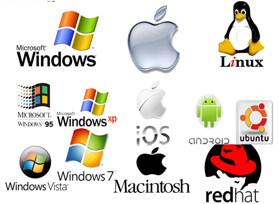
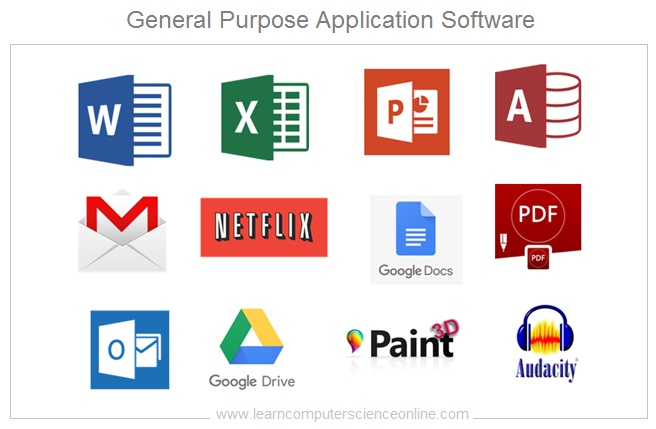

Types of Software: System Software and Application Software
Software is an integral part of any computer system.
It refers to a set of instructions, data, or programs used to operate computers
and execute specific tasks. Broadly, software is classified into two main categories:
System Software
Application Software.
Each plays a vital role in ensuring the
smooth functioning of computing devices and providing utility to users.
1. System Software
System software is the backbone of any computing system. It provides a platform for running application software and manages hardware resources. System software acts as an intermediary between hardware and user-level software, ensuring smooth communication and operation.

System Software manages hardware resources and provides essential services for other software.
Examples of System Software:
- Operating Systems (OS): Examples include Windows, macOS, Linux, and Android. These manage hardware resources and provide a user interface.
- Utility Software: Includes tools like disk cleanup utilities, antivirus programs, and file management systems.
- Firmware: Embedded software that controls devices like routers, printers, and washing machines.
Functions of System Software:
- Hardware Management: Coordinates and manages the computer's hardware components like CPU, memory, and I/O devices.
- Platform for Applications: Provides a base for running application software, ensuring they can access system resources efficiently.
- Performance Optimization: Includes utilities that help optimize system performance, like defragmentation tools and system monitors.
- Security and Maintenance: Includes features like firewalls, antivirus programs, and backup tools to secure and maintain the system.
Advantages of System Software:
- Enables interaction between hardware and software.
- Optimizes the performance of the system.
- Provides a stable platform for application software.
- Ensures secure and efficient resource allocation.
2. Application Software
Application software is designed to help users perform specific tasks or activities. Unlike system software, it focuses on user-level operations and provides functionality that caters to end-user requirements. Application software runs on top of system software and cannot function without it.

Application Software enables users to perform specific tasks like writing documents, browsing the web, or editing photos.
Examples of Application Software:
- Productivity Software: Word processors (Microsoft Word), spreadsheets (Excel), and presentation tools (PowerPoint).
- Web Browsers: Software like Google Chrome, Mozilla Firefox, and Microsoft Edge for accessing the internet.
- Multimedia Software: Applications for editing photos, videos, or audio, such as Adobe Photoshop and VLC Media Player.
- Gaming Software: Games like Minecraft, Fortnite, and The Sims.
- Business Software: Enterprise Resource Planning (ERP) tools like SAP and Customer Relationship Management (CRM) software like Salesforce.
Functions of Application Software:
- Task-Specific: Designed to perform specific user tasks, such as creating documents, editing videos, or managing databases.
- User Interaction: Provides an interface for users to interact with the software and complete their desired tasks.
- Customizability: Many applications can be customized to fit the specific needs of the user or organization.
Advantages of Application Software:
- Enables users to perform a wide range of tasks.
- Provides user-friendly interfaces tailored to specific needs.
- Can be developed for various platforms, including desktops, mobile devices, and the web.
Comparison Between System Software and Application Software
| Aspect |
System Software |
Application Software |
| Purpose |
Manages hardware resources and provides a platform for application software. |
Enables users to perform specific tasks like writing, browsing, or gaming. |
| Dependency |
Functions independently of application software. |
Relies on system software to run. |
| Examples |
Operating systems (Windows, Linux), firmware, and utility tools. |
Word processors, web browsers, multimedia tools, and games. |
| Interaction |
Interacts directly with hardware components. |
Interacts directly with users. |
Conclusion
Both system software and application software are crucial components of any computing environment. While system software ensures the efficient operation of hardware and provides a foundation for applications, application software focuses on fulfilling user-specific tasks and enhancing productivity. Together, they form the backbone of modern computing systems, enabling users to leverage technology for various purposes.